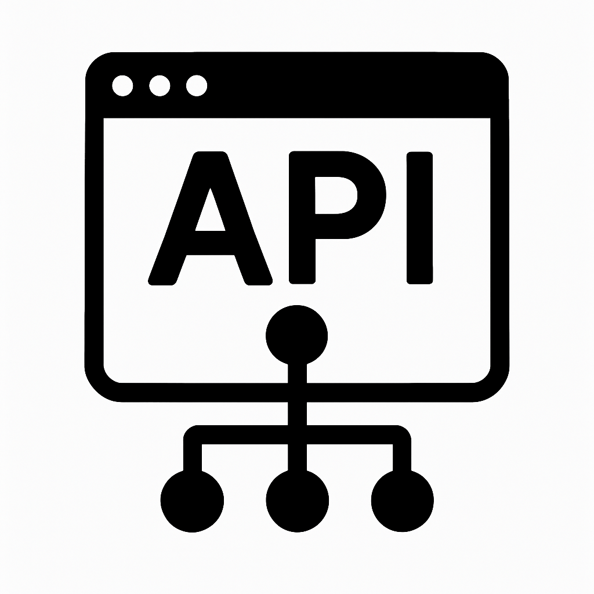

Semana 6

Descripción
Esta semana se trató el manejo de eventos, renderizado condicional e iterativo y consumo de APIs. Se usó Axios para hacer peticiones asíncronas.
Ejercicios de laboratorio - Resultados
Se desarrolló una interfaz React que renderiza datos desde una API pública. Se implementaron condicionales y listas dinámicas usando map().
Reflexión
¿Qué aprendí?: A conectar frontend con servicios externos y renderizar datos.
¿Cómo aprendí?: Implementando paso a paso con guía docente y apoyo en foros y Axios.